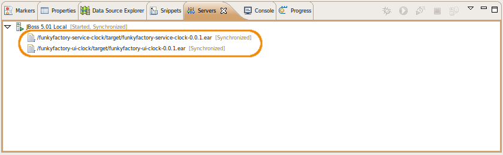

Installation of Eclipse template for service user interface development
This page contains the necessary instructions to install an Eclipse template for developing the user interface of a factory abstractService. It also contains an overview of everything given in this template. I. It assume that you have already installed a correct development environment, that you have correctly configured JBoss, that you have correctly installed and deployed a service, using the given Eclipse template, and that you correctly installed the necessary technologies for user interfaces. If this is not the case, then you need first to follow the given instruction before proceeding to this page.
Installing the template
To install the template, you need to get the template from git inside the eclipse workspace folder, and to import the project in eclipse
- Go to the "funkyfactory" folder, where you did checked out the service template folder a few steps ago: cd < insert the path to your workspace folder here >/funkyfactory
- Get the template from git with the following command: git clone git://github.com/funkyChris/funkyfactory-ui-clock.git This will create a new "funkyfactory-ui-clock" folder inside the "funkyfactory" folder, near the "funkyfactory-service-clock" folder.
- Go in the newly created "funkyfactory-ui-clock" folder, and edit the pom.xml file. Search for the "<jboss.home>" tag, and change the path to your own JBoss folder:
-
Launch Eclipse, and in the "File" menu, select the "Import..." menu item:

-
Open the "Maven" section, and choose "Existing Maven Projects":
 (If there is no "Existing Maven Projects" in the "Maven" section, search for a "Maven Projects" in the "General" section:)
(If there is no "Existing Maven Projects" in the "Maven" section, search for a "Maven Projects" in the "General" section:)
 (You can also check if there's no update for eclipse plugins:)
(You can also check if there's no update for eclipse plugins:)

-
Click on the "Browse" button to navigate to the "funkyfactory" folder you created earlier, (but don't click "OK" yet!):

- In the "funkyfactory" folder, go in the "funkyfactory-ui-clock" folder (created for you by git). In it, select the "funkyfactory-ui-clock" folder, and click the "OK" button:
- Eclipse should find the pom file of the project. You can then click on the "Finish" button:
-
Eclipse will import the maven project, and try to resolve all maven dependencies as defined in the pom.xml file. It will download all necessary jar files in your ".m2" folder, at the root of your home directory. Repeat the precedent steps ("File" -> "Import" ; "Maven" -> "Existing Maven Projects" ; "Browse") for the 2 remaining maven projects, inside the "funkyfactory/funkyfactory-ui-clock" folder:
- funkyfactory-service-clock-ejb
- funkyfactory-service-clock-ui
Once you imported the 3 maven project, you should have something like this in Eclipse:
Template content
The template contains 3 projects, each with its own specific role:
- funkyfactory-ui-clock-ejb
- The bridge to the EJB service. It's a EJB, that access the service EJB, but tagged with Seam's annotations, to be able to be called by the GWT interface.
- funkyfactory-ui-clock-ui
- The UI itself. It contains the Java source that will be compiled in Javascript, and produce a war item.
- funkyfactory-ui-clock
- Package the EJB jar and UI war inside an EAR container. It contains only configuration files necessary for the creation of the EAR.
funkyfactory-ui-clock-ejb
The goal of this project is to create a bridge between the GWT interface (client interface in Javascript) and the EJB of the service. As itself, GWT cannot access directly EJBs. So, we use Seam to create a bridge between GWT and EJB. This bridge is an EJB, so that it can access services EJB, but tagged with Seams annotations. Those Seams annotations, with the addition of a .gwt.xml config file, allow the EJB to be called by GWT: Seams recognise the annotations and create a specific servlet that do the bridge between GWT and the Seams EJB. The project containts 2 area of interests:
- src/main/java
- Contains the main sources of the bridge.
- The "xxx.gwt.xml" contains the definition of the GWT service. It just points to the folder containing the Java source of the interface of the bridge. The client interface will need access to the interface to be able to know which methods to call on the bridge, and how. As the client interface will be compiled in javascript, the GWT compiler need access not to the jar but directly to the source code defining the interfaces. This config file define the bridge as a "gwt module", and point to the folder containing the sources of the bridge interface. Later, the sources of those interfaces (and only the source of the interfaces) will be copied in the jar.
- The "impl" package contains the implementation of the bridge. It's a standard EJB, accessing factory services EJB through EJB annotations, and tagged with Seams annotations. The EJB implement the interface defined in the "service" package.
- The "service" package contains the definition of the interfaces. GWT needs two interfaces, one implementing "RemoteInterface", that will be implemented by the bridge, and a derivation of this interface, for asynchronous calls. The interfaces are defined in a separate package from the implementation so that only their sources (and not the source of the implementation) is included in the jar (for the compilation of the GWT client interface).
- src/main/resources
- Contains the configuration files for the bridge.
- "META-INF/ejb-jar.xml" is used by to do the connection between the bridge and Seam.
- "META-INF/MANIFEST.MF" define the classpath to jars used by the bridge. The jar themselfs are defined in the pom.xml file of the EAR project, and will be downloaded and put in the EAR when building the EAR project.
- "META-INF/persistence.xml" define the persistence unitused by the bridge. Here, the bridge use the default persistence unit.
- "components.properties" is used by Seam to define the JDNI name of the bridge.
- "log4j.properties" define the log level for the bridge.
- "seam.properties" is an empty file, necessary for Seam to recognise the bridge as a Seam component.
To compile the project, do a right-click on the project root folder ("funkyfactory-ui-clock-ejb"), and in the contextual menu, select "Run As" -> "Maven package": This will compile the java classes and create the necessary jar file. You can check the compilation in the console view:
When the package build correctly, you can deploy the jar directly in your local maven repository (the ".m2" folder at the root of your home directory) by selecting, in the same contextual menu, "Run As" -> "Maven install": This step is necessary for the funkyfactory-ui-clock-ui project in order to compile the gwt interface, as the sources of the bridge interfaces are in the funkyfactory-ui-clock jar, and the project use maven dependency to find it. Same thing for funkyfactory-ui-clock project, which need the ejb jar to create the ear. If you want, you can check that maven has correctly published the ejb jar in the folder "~/.m2/repository/org/qualipso/funkyfactory-ui-clock-ejb/0.0.1": The version number ("0.0.1") is defined directly in the pom.xml file, and should be incremented with each new version.
funkyfactory-ui-clock-ui
This project contains the real user interface, defined in Java, to be compiled to Javascript. It containts 3 area of interests:
- src/main/java
- Contains the sources of the user interface.
- The "xxx.gwt.xml" contains the definition of the GWT module for the interface. It reference the module containing the source of the bridge interface, and define the entry point for GWT.
- The java file contains the real interface. It define the interface in Java, using GWT ui components, and call the bridge EJB.
- "war/META-INF" and "war/WEB-INF"
- Contains several configuration files for the war, used by the Seam parts of the interface. The GWT interface is encapsulated in a Seam war, in order to communicate with the bridge. Those configuration files are used by the war.
Before compiling the project, there is one modification to do, in the "pom.xml" file. The GWT compiler tool needs to access libs that are in the GWT folder you installed previously. You need to put the path to those libs directly in the pom file:
- Open the "pom.xml" file, and at the end of the file, search for the dependencies to "gwt-user" and "gwt-dev":
- For both properties, change the path defined in "systemPath" to the correct path to the libraries, based on the value of your GWT_HOME.
To compile the project, do a right-click on the project root folder ("funkyfactory-ui-clock-ui"), and in the contextual menu, select "Run As" -> "Maven package": This will compile the java classes into Javascript, and generate everything necessary (javascript, html) in a "funkyfactory-ui-clock-ui" directly in the war. You can check the compilation in the console view:
When the package build correctly, you can deploy the jar directly in your local maven repository (the ".m2" folder at the root of your home directory) by selecting, in the same contextual menu, "Run As" -> "Maven install": This step is necessary for the funkyfactory-ui-clock project to create the ear. If you want, you can check that maven has correctly published the ejb jar in the folder "~/.m2/repository/org/qualipso/funkyfactory-ui-clock-ui/0.0.1": The version number ("0.0.1") is defined directly in the pom.xml file, and should be incremented with each new version.
funkyfactory-ui-clock
The unique goal of this project is to package the EJB jar and the ui war of the two precedent projects in a deployable ear. The project contains nothing as everything is defined in its pom.xml file.
The creation of the ear is done with a "maven package" command. However, due to a bug in the Eclipse maven plugin. you need to define a new Eclipse run configuration:
-
Do a right-click on the project root folder ("funkyfactory-ui-clock"), and in the contextual menu, select "Run As" -> "Run Configurations...":

-
Select "Maven Build" in the left list, and then click on the "New launch configuration" button:

- Set up the new configuration: fills up the "Name" field with "funkyfactory-ui-clock EAR" and click on the "Browse Workspace..." button to select the "funkyfactory-ui-clock" workspace. Then, click on the "Apply" button to save the configuration. You can now press the "Run" button to launch the newly created and saved configuration. You can check the creation of the ear in the console view:
- In order to deploy the service, you need to have a running JBoss, with the service deployed on it, as described here. The newly created ear will apply in a "target" folder, at the root of the project. If you don't see such a folder, refresh the project root folder ("F5" key). In the "target" folder, select the created ear ("funkyfactory-ui-clock-0.0.1.ear"), right-click on it, and in the contextual menu, select "Make Deployable": The ear will appears in the "Servers" view, under the "JBoss 5.01 Local": And you can follow the deployement and check if there is any problem in the console:
- If you change something in the EJB code and want to redeploy the ear, don't forget to undeploy the ear before: in the "Servers" view, right-click on the "funkyfactory-service-clock-ear", and in the contextual menu, select "Remove": You can follow the undeployement in the console:
Run the example
In order to deploy the service, you need to have a running JBoss, with the service and its ui deployed on it: 
You can run the example in two modes: in real mode, and in hosted mode.
To run the example in real mode, just open your web browser and enter the following url: http://localhost:8080/funkyfactory-ui-clock/ Click on the button, and the server's date will appears: The button and the result window are GWT components, in Javascript. When you click on the button, the GWT component ask to the ejb bridge, which ask to the ejb service (funkyfactory-service-clock-ejb), which return the current date. You can follow the call to the service on JBoss console view:
To run the example in hosted mode (easier for debugging), you need to create a special run configuration so that the hosted mode still use the JBoss server. This is done on the factory-ui-clock-ui project, as that's the project containing the gwt client interface':
- Do a right-click on the ui project root folder ("funkyfactory-ui-clock-ui"), and in the contextual menu, select "Run As" -> "Run Configurations...":
- Select "Web Application" in the left list, and then click on the "New launch configuration" button:
- Set up the new configuration: fills up the "Name" field with "funkyfactory-ui-clock" and click on the "Browse Workspace..." button to select the "funkyfactory-ui-clock-ui" workspace. Then, uncheck the "Run built-in server" check box.
- In the "GWT" tab, set the "URL" field to the following url: http://localhost:8080/funkyfactory-ui-clock/ and click on the "Apply" button to save the configuration.
- You can now press the "Run" button to launch the newly created and saved configuration In hosted mode, you have two windows: a main one, and a browser one. The browser one is the same as a web browser. The difference is that you can use it to debug the interface code, by calling the run target you just defined with the "Debug as..." menu item instead of the "Run as..." menu item.
Once you're at this step, you have everything to write your own service and its user interface.